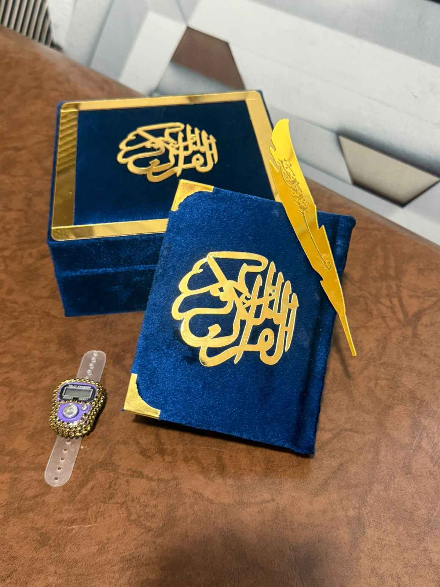

6 Acts of Continuous Charity
Invest in your hereafter by implementing these easy, highly-rewarding deeds today.

1. Gift a Holy Qur'an
Provide a copy of the Holy Qur'an to an individual, a school, or a local mosque. Every single time a letter from it is recited, an immense spiritual reward is directly credited to your account.
2. Donate a Wheelchair
Donate mobility equipment or medical resources to a hospital or clinic. Every single instance an ailing, sick, or elderly person finds comfort and uses it, you gain persistent blessings.

3. Build a Masjid
Participate financially or physically in building or maintaining a mosque. You earn continuous rewards for every single prayer, prostration, and remembrance of Allah made inside it.

4. Provide Clean Water
Place a functioning water cooler, filtration plant, or dig a water well in a crowded public space. Providing access to clean water is highly emphasized as one of the best forms of charity.

5. Plant a Tree
Plant a tree or a crop field. Every time a human seeker, a passing traveler, a bird, or an animal consumes its fresh fruit or finds comfortable shade underneath it, you gain automated continuous reward.

6. Spread Beneficial Knowledge
And the easiest method: Share this message with others. Simply spreading beneficial knowledge grants you equivalent rewards whenever an inspired individual acts upon any item listed here.